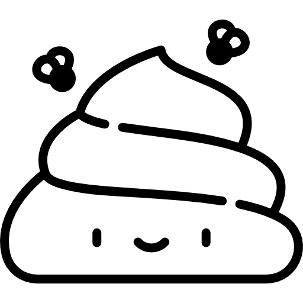
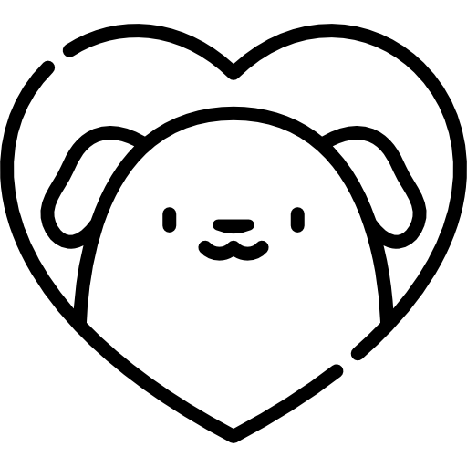

<ion-header>
  <ion-toolbar color="secondary">
    <ion-title color="light">
      Doggi Walks
    </ion-title>
  </ion-toolbar>
</ion-header>

<ion-content>
  <div #map id="map"></div>

  <ion-fab vertical="bottom" horizontal="center" slot="fixed" >
    <ion-fab-button (click)="startTracking()" *ngIf="!isTracking">
      <ion-icon name="locate-outline"></ion-icon>
    </ion-fab-button>
    <ion-fab-button color="danger" (click)="stopTracking()" *ngIf="isTracking">
      <ion-icon name="hand-right-outline"></ion-icon>
    </ion-fab-button>
  </ion-fab>

  <ion-fab vertical="bottom" horizontal="start" slot="fixed" *ngIf="isTracking">
    <ion-fab-button>
      <ion-icon name="arrow-up-circle"></ion-icon>
    </ion-fab-button>
    <ion-fab-list side="top">
      <ion-fab-button (click)="addToilet()" class="img-icons"></ion-fab-button>
      <ion-fab-button (click)="addDog()" class="img-icons"></ion-fab-button>
      <ion-fab-button (click)="addNotes()"><ion-icon name="pencil-outline"></ion-icon></ion-fab-button>
    </ion-fab-list>
  </ion-fab>
</ion-content>
